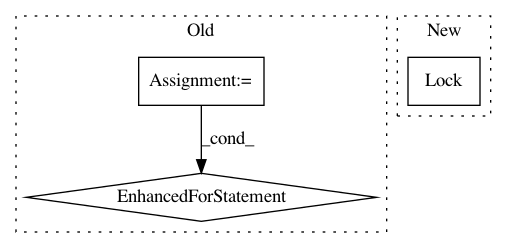

ea6f4184e712dd40f228b887074ec3ebc801bfd5,cameras.py,Camera,update,#Camera#,36
Before Change
def update(self):
stream = io.BytesIO()
for foo in self.cam.capture_continuous(stream, format="jpeg"):
// Truncate the stream to the current position (in case
// prior iterations output a longer image)
stream.truncate()
stream.seek(0)
self.img = Image.open(stream)
def capture_img(self):
img = self.img
return normalize(img)
After Change
t.start()
def update(self):
lock = threading.Lock()
while True:
with lock:
self.cam.capture(self.stream, "jpeg")
In pattern: SUPERPATTERN
Frequency: 3
Non-data size: 3
Instances
Project Name: autorope/donkeycar
Commit Name: ea6f4184e712dd40f228b887074ec3ebc801bfd5
Time: 2016-12-13
Author: wroscoe@gmail.com
File Name: cameras.py
Class Name: Camera
Method Name: update
Project Name: tensorflow/tensorboard
Commit Name: 0e6f21ef8836f9ffe4584005851b88e3eaee3313
Time: 2018-04-13
Author: 4221553+chihuahua@users.noreply.github.com
File Name: tensorboard/backend/event_processing/plugin_event_multiplexer.py
Class Name: EventMultiplexer
Method Name: Reload
Project Name: fizyr/keras-retinanet
Commit Name: b097c96ce2db1b57b772290b67af61d1c942c13e
Time: 2018-01-15
Author: maarten@de-vri.es
File Name: keras_retinanet/preprocessing/pascal_voc.py
Class Name: PascalVocGenerator
Method Name: __init__